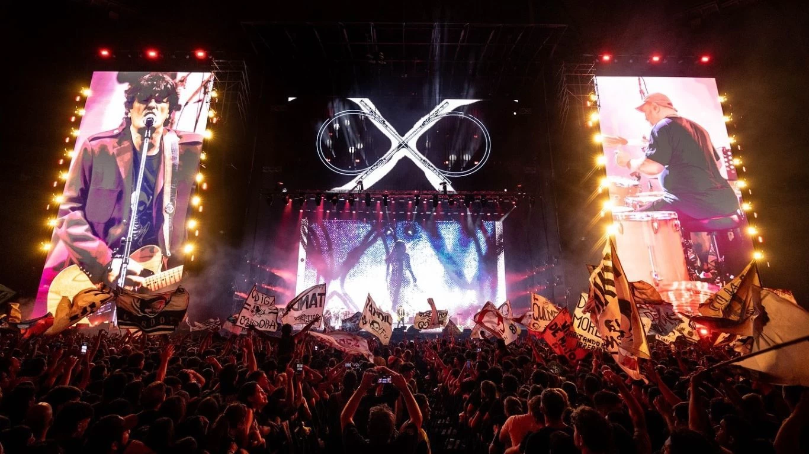

<!doctype html>
<html lang="es">
  <head>
    <meta charset="utf-8">
    <meta name="viewport" content="width=device-width, initial-scale=1">
    <title>Airbag</title>
    <link href="https://cdn.jsdelivr.net/npm/bootstrap@5.3.8/dist/css/bootstrap.min.css" rel="stylesheet" integrity="sha384-sRIl4kxILFvY47J16cr9ZwB07vP4J8+LH7qKQnuqkuIAvNWLzeN8tE5YBujZqJLB" crossorigin="anonymous">
    <link href="style.css" rel="stylesheet">
  </head>
  <body>
    <script src="https://cdn.jsdelivr.net/npm/bootstrap@5.3.8/dist/js/bootstrap.bundle.min.js" integrity="sha384-FKyoEForCGlyvwx9Hj09JcYn3nv7wiPVlz7YYwJrWVcXK/BmnVDxM+D2scQbITxI" crossorigin="anonymous"></script>
  </body>
</html>

 <div class="Botones">
       
        <a href="index.html"> 
        
    </a>
    </div>

     <div class="Encabezado">
        <h1>Bandas de Rock</h1>
    </div>

<nav class="navbar navbar-expand-lg bg-body-tertiary">
  <div class="container-fluid">
    <a class="navbar-brand" href="index.html">Buscador</a>
    <button class="navbar-toggler" type="button" data-bs-toggle="collapse" data-bs-target="#navbarSupportedContent" aria-controls="navbarSupportedContent" aria-expanded="false" aria-label="Toggle navigation">
      <span class="navbar-toggler-icon"></span>
    </button>
    <div class="collapse navbar-collapse" id="navbarSupportedContent">
      <ul class="navbar-nav me-auto mb-2 mb-lg-0">
        <li class="nav-item">
          <a class="nav-link active" aria-current="page" href="index.html">Inicio</a>
        </li>
        <li class="nav-item">
          <a class="nav-link" href="menu.html">Segunda pagina</a>
        </li>
         <li class="nav-item">
          <a class="nav-link" href="pag3.html">Tercera pagina</a>
        </li>
        <li class="nav-item">
          <a class="nav-link" href="pag444.html">Cuarta paginaa</a>
        </li>
        <form class="d-flex" role="search">
        <input class="form-control me-2" type="search" placeholder="Search" aria-label="Search"/>
        <button class="btn btn-outline-success" type="submit">Buscar</button>
      </form>
    </div>
  </div>
</nav>


<div class="accordion" id="accordionExample">
  <div class="accordion-item">
    <h2 class="accordion-header">
      <button class="accordion-button" type="button" data-bs-toggle="collapse" data-bs-target="#collapseOne" aria-expanded="true" aria-controls="collapseOne">
        Las canciones más famosas de Airbag
      </button>
    </h2>
    <div id="collapseOne" class="accordion-collapse collapse show" data-bs-parent="#accordionExample">
      <div class="accordion-body">
        <strong>Las canciones más famosas de Airbag son:</strong> -Por Mil Noches.
       -Cae El Sol.
        -Nunca Lo Olvides.
      </div>
    </div>
  </div>
  <div class="accordion-item">
    <h2 class="accordion-header">
      <button class="accordion-button collapsed" type="button" data-bs-toggle="collapse" data-bs-target="#collapseTwo" aria-expanded="false" aria-controls="collapseTwo">
        Las canciones más famosas de Patricio Rey y sus Redonditos de Ricota
      </button>
    </h2>
    <div id="collapseTwo" class="accordion-collapse collapse" data-bs-parent="#accordionExample">
      <div class="accordion-body">
        <strong>Las canciones más famosas de Patricio Rey y sus Redonditos de Ricota son:</strong> -Tarea Fina
        -Ji Ji Ji -Un Ángel para Tu Soledad.

      </div>
    </div>
  </div>
  <div class="accordion-item">
    <h2 class="accordion-header">
      <button class="accordion-button collapsed" type="button" data-bs-toggle="collapse" data-bs-target="#collapseThree" aria-expanded="false" aria-controls="collapseThree">
         Las canciones más famosas de Los Piojos 
      </button>
    </h2>
    <div id="collapseThree" class="accordion-collapse collapse" data-bs-parent="#accordionExample">
      <div class="accordion-body">
        <strong>Las canciones más famosas de Los Piojos son:</strong> -Tan solo
        -Ando Ganas (Llora llora)
        -Vine hasta aquí
        
        
      </div>
    </div>
  </div>
</div>




       <script src="https://cdn.jsdelivr.net/npm/@popperjs/core@2.11.8/dist/umd/popper.min.js" integrity="sha384-I7E8VVD/ismYTF4hNIPjVp/Zjvgyol6VFvRkX/vR+Vc4jQkC+hVqc2pM8ODewa9r" crossorigin="anonymous"></script>
<script src="https://cdn.jsdelivr.net/npm/bootstrap@5.3.8/dist/js/bootstrap.min.js" integrity="sha384-G/EV+4j2dNv+tEPo3++6LCgdCROaejBqfUeNjuKAiuXbjrxilcCdDz6ZAVfHWe1Y" crossorigin="anonymous"></script>

<footer>
    <p>Sofia Perucca.5to año.2026.ProA</p>
  </footer>

  <body>